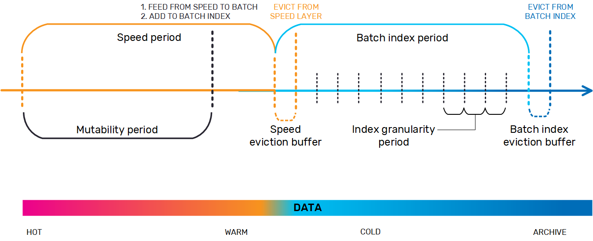

AnalyticsXtreme is a data lake accelerator that operationalizes your data lake for real-time analytics, which can run simultaneously on both real-time, mutable streaming data and on historical data that is stored on data lakes based on Hadoop, Amazon S3 or Azure Blob Storage, without exposing a separate data load procedure or data duplication. Moving from on-premise to the cloud, or changing technology stacks for example from Cloudera to Amazon S3, is seamless to machine learning applications; increasing flexibility while reducing development and maintenance.
With AnalyticsXtreme, your data is available for immediate searching, queries, and running analytics; there is a single logical view for hot, warm and cold data. The hot data resides on
HIve with Hadoop is only supported platform
Apache Hive is an SQL engine over Hadoop, has PARTITION query language with partition and bucket capability for categorizing data in the Hadoop file system (provides specific location for each type of data). Spark doesn't currently support querying buckets, only partitions.
Index entry structure - sya have partition by city, and want to do query by name. So need to map between names, and the cities that have pple with those names that live in them. Can't index entire file system because just the index would be very large.
accuracy vs. size
Index period is entire period that we want to index. For example, want to index one month out of a full year of data - one month is the index period. The month needs to be segmented into time slices called buckets (this is the index granularity). The more granular you get, the larger the index which is a tradeoff for greater accuracy. The longer the time slice the less granular, so the less accurate but you get better performance/ smaller footprint in memory. Index is deployed in MX space over SSD.
Speed space is the AX speed layer. Batch index space is MX over SSD space where the index is stored.
data is regularly moved from the speed layer to the batch later (only the data that matches the partition/bucket definitions and has a time value).
Note: Null is not a legitimate value.
As part of this process, the data is indexed before it's cached in the speed buffer. If a query is executed in the AX client, first step is to check whether index is available. Then verifies that all the required data is within the defined index period (if the time definition exceeds the index period, the index isn't used in the query because there won't be data consistency). If yes, query is run using the index. The relevant partitions are returned - meaning those that contain data that match the query. Then the original query from the client is updated with the partition condition.
example query would be to look for Niv and he is a match for three city partitions (Jerusalem, Tel Aviv, and Haifa). then the query would be name=Niv and partition=Jerusalem, Tel Aviv, Haifa. So the query only searches those three partitions instead of searching all the partitions, which speeds up the query considerably.
Lifecycle of the data from speed (hot) to batch (warm) to index (cold) to out (archive). Add diagram here. When data moves from speed layer to batch layer, is added to batch index as it moves through the speed layer eviction time window. As the data is moved into the batch layer, it is directed to the relevant partitions and buckets. When the batch layer time window expires, the data moves into the batch index eviction time window and when this expires, the data is expunged from the index and is available only as archive data.

running the example without the batch index takes over 4 minutes (full scan of maybe 30MB of data, which isn't a lot) in Hive.
When the query is run with the batch index, it takes about 3 seconds. the securityType (ETN) that was the target of the query was present in about 100 of the 1900 partitions in Hive, so using the batch index meant that 99% of the available partitions didn't actually have to be scanned.
Zeppelin also has a Batch Index Efficiency query to assess how effective it is to use the batch index to improve performance.
There are also statistics that are saved in the same object and so can used for demo purposes. This is for when you add your own data and apply your own queries, so you can see how effective batch indexing is on your own data.